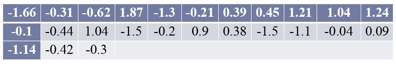
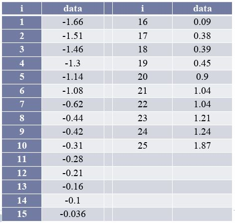
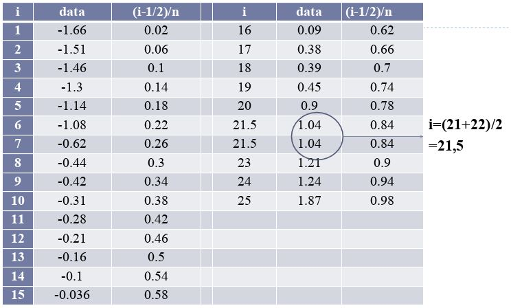
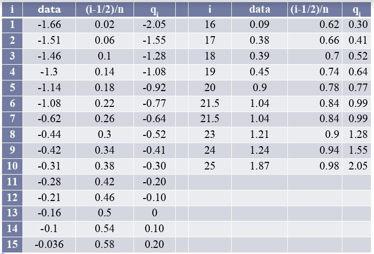
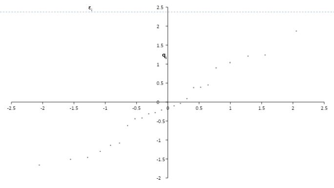

QQ Plot adalah uji kenormalan dengan menggunakan grafik (secara visual).
QQ Plot lebih cocok digunakan jika sampelnya lebih besar dari atau sama dengan 20 (n>=0)
QQ Plot terbentuk dari Zscore dari Quantil dengan Nilai Observasi
Langkah-Langkah
Urutkan data untuk mendapatkan x1, x2, ..., xn
Carilah nilai peluang yang bersesuaianadaequationdisiniJika terdapat nilai-nilai xi yang sama maka nilai i yang digunakan untuk mencari peluang yang bersesuaian pada observasi-observasi xi yang sama adalah dirata-ratakan.
Hitung Quantile Normal Standar q1, q2, ..., qnQuantile normal standar bisa dicari menggunakan tabel normal standaradaequationdisiniadaequationdisini
Buat diagram pencar untuk pasangan observasi (q1, x1 ), (q2, x2 ), ..., (qn, xn) dan periksa "kelurusan" hasil plot.
Intepretasikan diagram pencar yang diperoleh. Jika titik-titik yang diperoleh mengikuti garis lurus, maka dapat disimpulkan bahwa residual cenderung berdistribusi normal.
Contoh
Periksalah apakah data berikut berdistribusi normal dengan menggunakan QQ Plot

Pertama-tama urutkan data
Carilah nilai peluang yang bersesuaian
Hitung Quantile Normal Standar
Buat diagram pencar
Dari diagram pencar yang terbentuk terlihat bahwa titik-titik yang terbentuk cenderung mengikuti garis lurus sehingga dapat disimpulkan bahwa residual memenuhi asumsi normalitas.